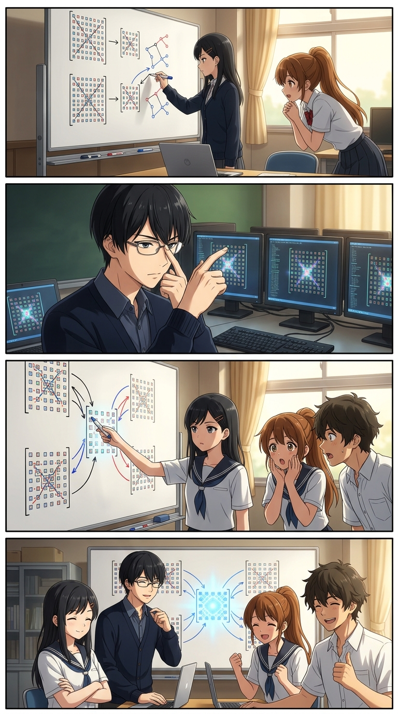
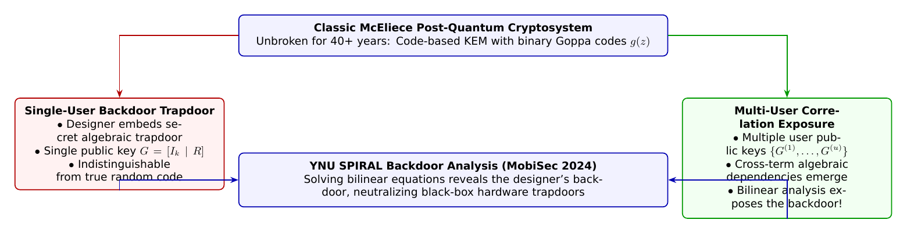

🎨 4コマ漫画挿絵（文字なし）
AI高解像度生成
▲ 【挿絵】青葉台高校 情報科学部＆帝都科学大学サイバーディフェンス・ラボでの実践シーン
💬 4コマ漫画キャラクターセリフ (Story Dialogue Script)
日・英バイリンガル (JA / EN)[葵]「巨大な公開鍵行列の中にランダムな誤りを混ぜて暗号化するんだよね。これなら量子コンピュータでも絶対に破れないの？」
[Aoi] "It encrypts by mixing random error vectors into giant generator matrices. Is it truly impregnable even to quantum attacks?"
[蓮]「えっ！？ 単一のユーザーならランダムに見えても、複数人の鍵が集まると法則が浮き彫りになる……！？」
[Ren] "Wait! Even if it looks pseudo-random for one user, does a hidden pattern emerge once multiple users' keys gather!?"
[葵]「設計者がこっそり全ユーザーの鍵を覗き見しようとしても、数学のメスでその悪意をあぶり出せるんだ！」
[Aoi] "Even if a rogue designer tries to spy on everyone, rigorous linear algebra exposes and neutralizes the hidden malice!"
[全員]「幾何と代数の真理を武器に、完全な信頼を築く未来へ進もう！」
[All] "Armed with the truth of geometry and algebra, we build unbreakable trust for the post-quantum era!"
📖 小説本文
「40年間、一度も破られたことがない……！？」
橘葵が思わず身を乗り出した。青葉台高校情報科学部室のホワイトボードには、白石結衣の手によって縦横数百ビットにも及ぶ巨大な二元体上の行列が描かれていた。
「はい、葵先輩」結衣が満足そうに頷く。「1978年にロバート・マックエリス（Robert McEliece）が提案した『McEliece暗号』は、二元Goppa符号（Binary Goppa Code）という誤り訂正符号の復号困難性を安全性の根拠にしています。RSA暗号や楕円曲線暗号がショアの量子アルゴリズムで壊滅するのに対し、符号ベース暗号は量子コンピュータを用いても指数時間の計算量を要するため、NIST（米国国立標準技術研究所）のPQC標準化でも極めて高い信頼を獲得しています」
「格子暗号（Kyber）よりも歴史が古くて実績があるんだよね」神崎蓮が補足する。「公開鍵が数十万バイトから数メガバイトと巨大なのが唯一の欠点だけど、そのぶん暗号文サイズは小さくて、ハードウェアアクセラレータでの復号も爆速なんだ」
「無敵じゃん！」葵が胸を張った。「これを使っていれば、量子コンピュータの時代が来ても100%安心ってことね！」
「――もし、その暗号モジュールを作った国家やベンダが、最初から**『秘密の抜け穴（バックドア）』**を仕込んでいたらどうする？」
部室のドアを開けて入ってきた城崎悠真が、静かに問いかけた。
「え……バックドア？ でも、暗号アルゴリズムってオープンソースで数理的に公開されてるんじゃないの？」葵が瞬きする。
「アルゴリズムの仕様書がオープンであっても、**パラメータ生成（鍵生成パラメータの選定）**のプロセスがブラックボックス化されていたら話は別なんだ」悠真がノートPCを開き、横浜国立大学SPIRAL・NexCrypt Lab（四方順司教授・佐藤慎悟准教授ら）の三浦優樹氏らの最新研究論文（MobiSec 2024）をプロジェクターに投影した。
「タイトルは――**『Analysis of Backdoored (Classic) McEliece in a Multi-User Setting（マルチユーザー環境におけるバックドア付きClassic McElieceの解析）』**」
結衣の瞳が、数理的な好奇心でキラリと輝いた。 「McEliece暗号におけるバックドア……！ 設計者が鍵生成器の乱数種やGoppa多項式 $g(z)$ の選定規則に特定の代数幾何的関係性を忍ばせ、設計者だけが効率的に秘密鍵を復元できるようにする攻撃ですね！」
---
📊 セキュリティ構造図解 (TikZ LuaLaTeX生成)
国家安全基準・工学図解
▲ 【技術構造図】IPAデジタルスキル標準・国際規格に準拠した仕組みのモデル化